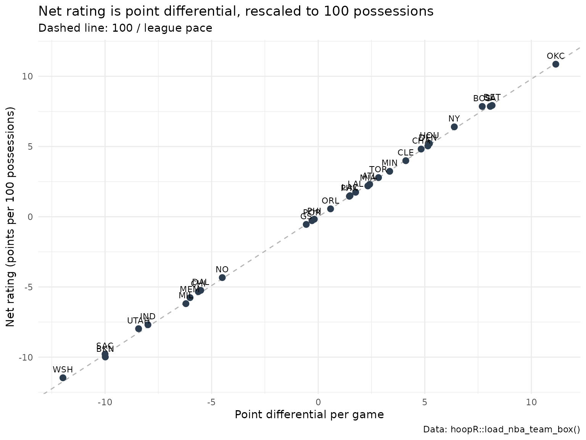
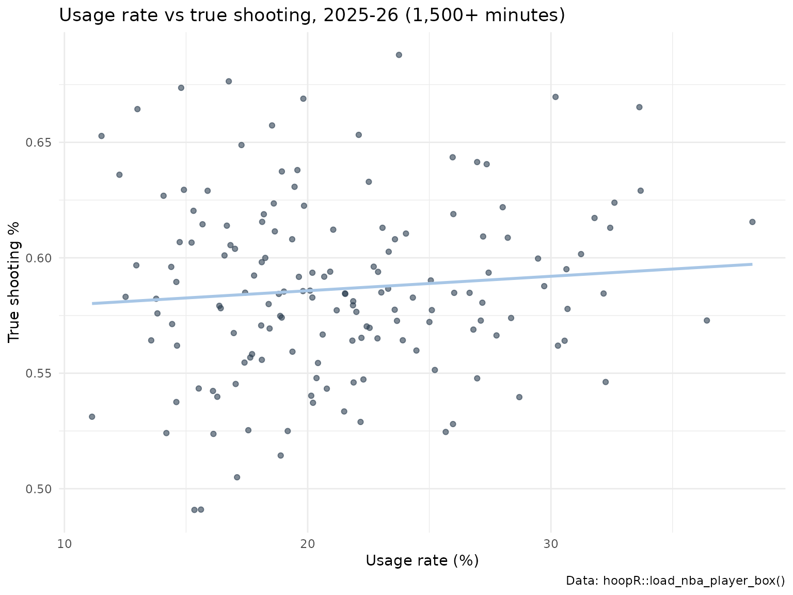

Basketball Advanced Metrics in R: Possessions, Pace, Ratings and the Four Factors
Saiem Gilani
Source:vignettes/articles/basketball-advanced-metrics.Rmd
basketball-advanced-metrics.RmdPoints per game tells you how much a team scored. Points per
possession tells you how well it scored. This article walks
through the standard efficiency metrics of basketball analytics, shows
the formula for each, computes it with hoopR’s helpers on a
full NBA season, and checks the helper against a hand calculation.
Everything here runs offline on the SportsDataverse release files, so it
is fast and reproducible.
If you are new to hoopR, start with Getting Started with hoopR. The
helpers used here live in the Basketball
Analytics Utilities section of the reference.
What you need
We use three release loaders: load_nba_team_box() (one
row per team per game), load_nba_player_box() (one row per
player per game) and load_nba_pbp() (to count overtime
periods). Team box scores carry ESPN’s column names, so we rename them
once to the short names the helpers expect.
team_box <- load_nba_team_box(seasons = season) |>
filter(season_type == 2) |> # regular season
add_count(team_id, name = "team_games") |>
filter(team_games >= 41) |> # drop All-Star exhibition teams
transmute(
game_id, team_id, team = team_abbreviation, opp_id = opponent_team_id,
pts = team_score, fgm = field_goals_made, fga = field_goals_attempted,
fg3m = three_point_field_goals_made, fg3a = three_point_field_goals_attempted,
ftm = free_throws_made, fta = free_throws_attempted,
oreb = offensive_rebounds, dreb = defensive_rebounds,
ast = assists, tov = total_turnovers
)
# minutes played: 48 per regulation game plus 5 per overtime period
game_minutes <- load_nba_pbp(seasons = season) |>
group_by(game_id) |>
summarise(periods = max(period_number), .groups = "drop") |>
mutate(game_min = 48 + 5 * pmax(periods - 4, 0))
# attach each team's opponent totals to its own row
games <- team_box |>
inner_join(
team_box |> select(game_id, opp_id = team_id, opp_pts = pts, opp_fgm = fgm,
opp_fga = fga, opp_fg3m = fg3m, opp_ftm = ftm, opp_fta = fta,
opp_oreb = oreb, opp_dreb = dreb, opp_tov = tov),
by = c("game_id", "opp_id")
) |>
inner_join(game_minutes, by = "game_id")
# a few box scores have missing team totals; drop those team-games
n_before <- nrow(games)
games <- filter(games, if_all(everything(), \(x) !is.na(x)))
c(team_games = nrow(games), dropped_incomplete = n_before - nrow(games))
#> team_games dropped_incomplete
#> 2458 2How many possessions did a team have?
A possession is one team’s turn with the ball. It ends with a made field goal (or last free throw), a defensive rebound, a turnover, or the end of a period. An offensive rebound extends a possession rather than starting a new one. Box scores do not record possessions, so we estimate them:
possessions = FGA + 0.44 * FTA - OREB + TOV
nba_possessions() computes exactly that. The 0.44 is the
average share of a possession a free-throw attempt ends: two-shot fouls
use two attempts for one possession, three-shot fouls three, and
and-ones and technicals add attempts that end nothing.
Both teams in a game have (almost) the same number of possessions, so a common refinement averages the two estimates. We use that game-level average for every rating below.
games <- games |>
mutate(
poss_own = nba_possessions(fga, fta, oreb, tov),
poss_opp = nba_possessions(opp_fga, opp_fta, opp_oreb, opp_tov),
poss = (poss_own + poss_opp) / 2
)
# hand check on the first row
g <- games[1, ]
hand <- g$fga + 0.44 * g$fta - g$oreb + g$tov
c(helper = g$poss_own, hand = hand, equal = isTRUE(all.equal(g$poss_own, hand)))
#> helper hand equal
#> 109.2 109.2 1.0
summary(games$poss)
#> Min. 1st Qu. Median Mean 3rd Qu. Max.
#> 85.84 98.60 102.24 102.54 105.84 129.88The two teams’ single-side estimates differ by a median of 2 possessions per game, which is why the average is preferred.
What is pace?
Pace is possessions per 48 minutes.
nba_pace() takes the possession count and the team’s total
player-minutes (240 for a regulation game, five players times
48 minutes) and returns
pace = 48 * possessions / (minutes / 5)
so overtime games are not mistaken for fast ones.
Offensive, defensive and net rating
-
Offensive rating (ORtg): points scored per 100
possessions,
100 * PTS / poss, fromnba_offensive_rating(). -
Defensive rating (DRtg): points allowed per 100
possessions,
100 * opponent PTS / poss, fromnba_defensive_rating(). Lower is better. -
Net rating:
ORtg - DRtg, fromnba_net_rating(). A net rating of +5 means outscoring opponents by five points every 100 possessions.
Ratings for a season are computed from season totals (sum the points, sum the possessions, then divide), not by averaging game ratings, so long games count for more.
team_season <- games |>
group_by(team) |>
summarise(
gp = n(), pts = sum(pts), opp_pts = sum(opp_pts),
poss = sum(poss), team_min = sum(team_min),
.groups = "drop"
) |>
mutate(
pace = nba_pace(poss, team_min),
ortg = nba_offensive_rating(pts, poss),
drtg = nba_defensive_rating(opp_pts, poss),
net = nba_net_rating(ortg, drtg)
) |>
arrange(desc(net))
team_season |>
select(team, gp, pace, ortg, drtg, net) |>
mutate(across(pace:net, \(x) round(x, 1))) |>
head(10)
#> # A tibble: 10 × 6
#> team gp pace ortg drtg net
#> <chr> <int> <dbl> <dbl> <dbl> <dbl>
#> 1 OKC 82 102. 116 105. 10.9
#> 2 DET 82 102. 114. 106. 7.9
#> 3 SA 83 102. 117. 109. 7.9
#> 4 BOS 82 97.7 117. 109. 7.9
#> 5 NY 83 99.4 117. 110. 6.4
#> 6 HOU 82 99 115. 110. 5.2
#> 7 DEN 82 101. 120. 114. 5
#> 8 CHA 82 99.9 116. 111. 4.8
#> 9 CLE 82 103. 116. 112. 4
#> 10 MIN 82 103. 114. 110. 3.2Across the league, teams scored 112.7 points per 100 possessions at a pace of 102 possessions per 48 minutes. Net rating tracks winning closely, which is why it is the headline team metric:
team_season |>
mutate(margin_pg = (pts - opp_pts) / gp) |>
ggplot(aes(margin_pg, net, label = team)) +
geom_abline(slope = 100 / lg_pace, intercept = 0, colour = "grey70", linetype = "dashed") +
geom_point(colour = "#2C3D50", size = 2.5) +
geom_text(nudge_y = 0.6, size = 3) +
labs(
title = "Net rating is point differential, rescaled to 100 possessions",
subtitle = "Dashed line: 100 / league pace",
x = "Point differential per game", y = "Net rating (points per 100 possessions)",
caption = "Data: hoopR::load_nba_team_box()"
) +
theme_minimal()
The four factors
Dean Oliver identified four things a team must do well to win, on both offense and defense:
| Factor | Formula | Helper |
|---|---|---|
| Shooting: effective FG% | (FGM + 0.5 * 3PM) / FGA |
nba_effective_fg_pct() |
| Turnovers: turnover % | 100 * TOV / (FGA + 0.44 * FTA + TOV) |
nba_turnover_pct() |
| Rebounding: offensive rebound % | 100 * OREB / (OREB + opponent DREB) |
nba_oreb_pct() |
| Free throws: free-throw rate | FTM / FGA |
inside nba_four_factors()
|
Effective field-goal percentage (eFG%) credits a
made three with 1.5 field goals, because it is worth 1.5 times a two.
Turnover percentage (TOV%) is turnovers per 100 plays.
Offensive rebound percentage (OREB%) is the share of a
team’s own misses it rebounded. The free-throw rate in
the four factors is free throws made per field-goal attempt;
the standalone nba_ft_rate() returns the more common
attempts-based version, FTA / FGA. Mind which one you
report.
nba_four_factors() returns all four as a tibble. The
defensive four factors are simply the opponent’s offensive four
factors.
ff <- games |>
group_by(team) |>
summarise(across(c(fgm, fg3m, fga, fta, ftm, oreb, tov, dreb,
opp_fgm, opp_fg3m, opp_fga, opp_fta, opp_ftm, opp_oreb, opp_tov, opp_dreb),
sum), .groups = "drop")
off_ff <- with(ff, nba_four_factors(fgm, fg3m, fga, fta, ftm, oreb, tov, opp_dreb))
def_ff <- with(ff, nba_four_factors(opp_fgm, opp_fg3m, opp_fga, opp_fta, opp_ftm, opp_oreb, opp_tov, dreb))
names(def_ff) <- paste0("opp_", names(def_ff))
four_factors <- bind_cols(team = ff$team, off_ff, def_ff) |>
left_join(select(team_season, team, net), by = "team")
four_factors |>
arrange(desc(net)) |>
mutate(across(where(is.numeric), \(x) round(x, 3))) |>
head(8)
#> # A tibble: 8 × 10
#> team efg_pct tov_pct oreb_pct ft_rate opp_efg_pct opp_tov_pct opp_oreb_pct
#> <chr> <dbl> <dbl> <dbl> <dbl> <dbl> <dbl> <dbl>
#> 1 OKC 0.561 11.2 22.3 0.213 0.519 14.6 25.6
#> 2 DET 0.546 13.0 30.9 0.223 0.517 14.8 25.8
#> 3 SA 0.558 11.7 26.3 0.215 0.522 11.4 23.0
#> 4 BOS 0.553 11.1 29.2 0.167 0.523 11.4 24.3
#> 5 NY 0.557 12.1 29.6 0.187 0.54 13.0 23.4
#> 6 HOU 0.542 13.3 34.8 0.199 0.53 12.1 25.5
#> 7 DEN 0.577 11.5 23.6 0.237 0.543 10.4 24.7
#> 8 CHA 0.552 13.5 30.5 0.2 0.54 11.6 23.4
#> # ℹ 2 more variables: opp_ft_rate <dbl>, net <dbl>A hand check of the first team’s offensive eFG% and OREB%:
t1 <- ff[1, ]
c(
efg_helper = off_ff$efg_pct[1],
efg_hand = (t1$fgm + 0.5 * t1$fg3m) / t1$fga,
oreb_helper = off_ff$oreb_pct[1],
oreb_hand = 100 * t1$oreb / (t1$oreb + t1$opp_dreb)
)
#> efg_helper efg_hand oreb_helper oreb_hand
#> 0.5537064 0.5537064 24.3506494 24.3506494How much does each factor matter? Here is the correlation of each offensive and defensive factor with net rating across the 30 teams:
four_factors |>
summarise(across(c(efg_pct, tov_pct, oreb_pct, ft_rate,
opp_efg_pct, opp_tov_pct, opp_oreb_pct, opp_ft_rate),
\(x) cor(x, net))) |>
tidyr::pivot_longer(everything(), names_to = "factor", values_to = "cor_with_net") |>
arrange(desc(abs(cor_with_net))) |>
mutate(cor_with_net = round(cor_with_net, 2))
#> # A tibble: 8 × 2
#> factor cor_with_net
#> <chr> <dbl>
#> 1 opp_efg_pct -0.9
#> 2 efg_pct 0.62
#> 3 opp_oreb_pct -0.56
#> 4 tov_pct -0.53
#> 5 oreb_pct 0.43
#> 6 opp_ft_rate -0.35
#> 7 opp_tov_pct 0.26
#> 8 ft_rate 0.15This season the factor most strongly correlated with net rating is opp_efg_pct (r = -0.9); Oliver’s own weighting ranked shooting first, then turnovers, rebounding and free throws. A linear model of net rating on all eight factors explains 99% of the variance across teams this season (an in-sample fit on 30 teams, so treat it as descriptive).
Player shooting efficiency: eFG% and true shooting
True shooting percentage (TS%) extends eFG% to free throws: points per shooting possession,
TS% = PTS / (2 * (FGA + 0.44 * FTA))
computed by nba_true_shooting_pct(). It is the best
single number for scoring efficiency because it counts every way of
scoring.
player_box <- load_nba_player_box(seasons = season) |>
filter(season_type == 2, !did_not_play, minutes > 0) |>
semi_join(team_box, by = c("game_id", "team_id"))
players <- player_box |>
group_by(athlete_id, athlete_display_name, team_abbreviation) |>
summarise(
gp = n(), min = sum(minutes), pts = sum(points),
fgm = sum(field_goals_made), fga = sum(field_goals_attempted),
fg3m = sum(three_point_field_goals_made),
ftm = sum(free_throws_made), fta = sum(free_throws_attempted),
tov = sum(turnovers), ast = sum(assists),
.groups = "drop"
) |>
mutate(
ts_pct = nba_true_shooting_pct(pts, fga, fta),
efg_pct = nba_effective_fg_pct(fgm, fg3m, fga),
ft_rate = nba_ft_rate(fta, fga)
)
players |>
filter(fga >= 800) |>
arrange(desc(ts_pct)) |>
select(athlete_display_name, team_abbreviation, pts, fga, fta, ts_pct, efg_pct, ft_rate) |>
mutate(across(ts_pct:ft_rate, \(x) round(x, 3))) |>
head(10)
#> # A tibble: 10 × 8
#> athlete_display_name team_abbreviation pts fga fta ts_pct efg_pct
#> <chr> <chr> <int> <int> <int> <dbl> <dbl>
#> 1 Jalen Duren DET 1365 803 430 0.688 0.65
#> 2 Nikola Jokic DEN 1799 1132 480 0.67 0.618
#> 3 Shai Gilgeous-Alexander OKC 2117 1321 614 0.665 0.597
#> 4 Zion Williamson NO 1302 807 465 0.644 0.6
#> 5 Kevin Durant HOU 2026 1376 467 0.641 0.588
#> 6 Kon Knueppel CHA 1498 1084 226 0.633 0.601
#> 7 Kawhi Leonard LAC 1813 1258 416 0.629 0.573
#> 8 Victor Wembanyama SA 1618 1097 454 0.624 0.567
#> 9 OG Anunoby NY 1146 821 226 0.623 0.585
#> 10 Jamal Murray DEN 1905 1360 390 0.622 0.573
#> # ℹ 1 more variable: ft_rate <dbl>(A player traded mid-season appears once per team here.)
Usage rate: who finishes the plays?
Usage rate estimates the share of team plays a player “used” (ended with a shot, free throws or a turnover) while on the floor:
USG% = 100 * (FGA + 0.44 * FTA + TOV) * (team minutes / 5) / (minutes * (team FGA + 0.44 * team FTA + team TOV))
nba_usage_rate() needs the team’s totals for the games
the player played, so we join team totals to each player game and
sum.
team_game_totals <- player_box |>
group_by(game_id, team_id) |>
summarise(team_fga = sum(field_goals_attempted), team_fta = sum(free_throws_attempted),
team_tov = sum(turnovers), .groups = "drop") |>
inner_join(games |> select(game_id, team_id, team_min), by = c("game_id", "team_id"))
usage <- player_box |>
inner_join(team_game_totals, by = c("game_id", "team_id")) |>
group_by(athlete_id, athlete_display_name, team_abbreviation) |>
summarise(
min = sum(minutes), fga = sum(field_goals_attempted), fta = sum(free_throws_attempted),
tov = sum(turnovers), team_fga = sum(team_fga), team_fta = sum(team_fta),
team_tov = sum(team_tov), team_min = sum(team_min), pts = sum(points),
.groups = "drop"
) |>
mutate(
usg = nba_usage_rate(fga, fta, tov, min, team_fga, team_fta, team_tov, team_min),
ts_pct = nba_true_shooting_pct(pts, fga, fta)
) |>
filter(min >= 1500)
usage |>
arrange(desc(usg)) |>
select(athlete_display_name, team_abbreviation, min, usg, ts_pct) |>
mutate(usg = round(usg, 1), ts_pct = round(ts_pct, 3)) |>
head(10)
#> # A tibble: 10 × 5
#> athlete_display_name team_abbreviation min usg ts_pct
#> <chr> <chr> <dbl> <dbl> <dbl>
#> 1 Luka Doncic LAL 2293 38.3 0.616
#> 2 Jaylen Brown BOS 2443 36.4 0.573
#> 3 Kawhi Leonard LAC 2087 33.7 0.629
#> 4 Shai Gilgeous-Alexander OKC 2262 33.6 0.665
#> 5 Victor Wembanyama SA 1893 32.6 0.624
#> 6 Donovan Mitchell CLE 2341 32.4 0.613
#> 7 LaMelo Ball CHA 2015 32.2 0.546
#> 8 Devin Booker PHX 2148 32.2 0.585
#> 9 Anthony Edwards MIN 2134 31.8 0.617
#> 10 James Harden LAC 1532 31.2 0.602Team turnovers that are not credited to a player (shot-clock violations, for example) are left out of the team total here, because no player used them. Usage and efficiency trade off: the more plays a player finishes, the harder it is to keep a high TS%.
ggplot(usage, aes(usg, ts_pct)) +
geom_point(alpha = 0.6, colour = "#2C3D50") +
geom_smooth(method = "lm", se = FALSE, colour = "#A7C6E6") +
labs(
title = "Usage rate vs true shooting, 2025-26 (1,500+ minutes)",
x = "Usage rate (%)", y = "True shooting %",
caption = "Data: hoopR::load_nba_player_box()"
) +
theme_minimal()
Per-minute and per-possession stats
Counting stats depend on playing time. nba_per_minutes()
rescales chosen columns to a per-36-minute basis and
nba_per_possessions() to per 100 possessions; both add new
{col}_per_{n} columns and leave the originals alone.
players |>
filter(min >= 1500) |>
nba_per_minutes(cols = c("pts", "ast", "tov"), minutes = "min", per = 36) |>
arrange(desc(pts_per_36)) |>
select(athlete_display_name, min, pts, pts_per_36, ast_per_36, tov_per_36) |>
mutate(across(ends_with("_36"), \(x) round(x, 1))) |>
head(5)
#> # A tibble: 5 × 6
#> athlete_display_name min pts pts_per_36 ast_per_36 tov_per_36
#> <chr> <dbl> <int> <dbl> <dbl> <dbl>
#> 1 Shai Gilgeous-Alexander 2262 2117 33.7 7.1 2.4
#> 2 Luka Doncic 2293 2143 33.6 8.3 4
#> 3 Kawhi Leonard 2087 1813 31.3 4 2.3
#> 4 Victor Wembanyama 1893 1618 30.8 3.8 3
#> 5 Jaylen Brown 2443 2038 30 5.4 3.8
team_season |>
left_join(ff |> select(team, tov, oreb), by = "team") |>
nba_per_possessions(cols = c("pts", "tov", "oreb"), possessions = "poss", per = 100) |>
select(team, pts_per_100, tov_per_100, oreb_per_100) |>
mutate(across(-team, \(x) round(x, 1))) |>
head(5)
#> # A tibble: 5 × 4
#> team pts_per_100 tov_per_100 oreb_per_100
#> <chr> <dbl> <dbl> <dbl>
#> 1 OKC 116 12.3 9.3
#> 2 DET 114. 14.7 12.7
#> 3 SA 117. 13 11.2
#> 4 BOS 117. 12.6 12.8
#> 5 NY 117. 13.6 12.8pts_per_100 is exactly offensive rating.
Adding several metrics at once
nba_add_advanced_metrics() scans a box score for
familiar column names (pts, fgm,
fga, fg3m, ftm, fta,
oreb, dreb, ast,
stl, blk, pf, tov
and common aliases) and appends TS%, eFG%, FT rate, TOV%,
assist-to-turnover ratio and Hollinger’s Game Score. ESPN’s long names
are not among the aliases, so rename first:
player_box |>
transmute(
athlete_display_name, game_id, pts = points, fgm = field_goals_made,
fga = field_goals_attempted, fg3m = three_point_field_goals_made,
ftm = free_throws_made, fta = free_throws_attempted,
oreb = offensive_rebounds, dreb = defensive_rebounds, ast = assists,
stl = steals, blk = blocks, pf = fouls, tov = turnovers
) |>
nba_add_advanced_metrics() |>
arrange(desc(game_score)) |>
select(athlete_display_name, pts, ts_pct, efg_pct, game_score) |>
head(5)
#> # A tibble: 5 × 5
#> athlete_display_name pts ts_pct efg_pct game_score
#> <chr> <int> <dbl> <dbl> <dbl>
#> 1 Bam Adebayo 83 0.670 0.547 60.5
#> 2 Nikola Jokic 56 0.900 0.810 59.8
#> 3 Nikola Jokic 55 0.915 0.891 53.2
#> 4 Luka Doncic 60 0.782 0.75 51.8
#> 5 Kawhi Leonard 55 0.821 0.75 51.6Game Score (nba_game_score()) is John
Hollinger’s single-game rating, scaled like points:
PTS + 0.4 FGM - 0.7 FGA - 0.4 (FTA - FTM) + 0.7 OREB + 0.3 DREB + STL + 0.7 AST + 0.7 BLK - 0.4 PF - TOV.
The same metrics for men’s college basketball
The helpers are league-agnostic. College games are 40 minutes (two
20-minute halves, five-minute overtimes), so quote pace per 40 minutes:
40 * possessions / (minutes / 5). The ESPN college player
box records whole minutes, so we round each team’s summed minutes to the
nearest regulation-plus-overtime total.
mbb_team <- load_mbb_team_box(seasons = season) |>
filter(season_type == 2) |>
transmute(game_id, team_id, team = team_display_name, opp_id = opponent_team_id,
pts = team_score, fga = field_goals_attempted, fta = free_throws_attempted,
oreb = offensive_rebounds, tov = total_turnovers)
mbb_minutes <- load_mbb_player_box(seasons = season) |>
filter(season_type == 2) |>
group_by(game_id, team_id) |>
summarise(min = sum(minutes, na.rm = TRUE), .groups = "drop") |>
mutate(team_min = 200 + 25 * pmax(round((min - 200) / 25), 0))
mbb_games <- mbb_team |>
inner_join(mbb_team |> select(game_id, opp_id = team_id, opp_pts = pts, opp_fga = fga,
opp_fta = fta, opp_oreb = oreb, opp_tov = tov),
by = c("game_id", "opp_id")) |>
inner_join(mbb_minutes, by = c("game_id", "team_id")) |>
mutate(poss = (nba_possessions(fga, fta, oreb, tov) +
nba_possessions(opp_fga, opp_fta, opp_oreb, opp_tov)) / 2)
mbb_season <- mbb_games |>
group_by(team_id, team) |>
summarise(gp = n(), pts = sum(pts), opp_pts = sum(opp_pts), poss = sum(poss),
team_min = sum(team_min), .groups = "drop") |>
filter(gp >= 20) |>
mutate(
tempo = 40 * poss / (team_min / 5),
ortg = nba_offensive_rating(pts, poss),
drtg = nba_defensive_rating(opp_pts, poss),
net = nba_net_rating(ortg, drtg)
)
mbb_season |>
arrange(desc(net)) |>
select(team, gp, tempo, ortg, drtg, net) |>
mutate(across(tempo:net, \(x) round(x, 1))) |>
head(10)
#> # A tibble: 10 × 6
#> team gp tempo ortg drtg net
#> <chr> <int> <dbl> <dbl> <dbl> <dbl>
#> 1 Duke Blue Devils 34 66.5 124. 95 28.8
#> 2 High Point Panthers 34 70.9 126. 98.3 27.6
#> 3 Gonzaga Bulldogs 33 69.7 122. 94.3 27.3
#> 4 Saint Louis Billikens 33 71.3 122. 97.5 24.9
#> 5 Michigan Wolverines 34 70.7 122. 97.6 24.8
#> 6 Iowa State Cyclones 34 67.6 121. 96.4 24.6
#> 7 Arizona Wildcats 34 70.6 122. 97.1 24.5
#> 8 Houston Cougars 34 64.3 120. 97.5 22.2
#> 9 Illinois Fighting Illini 32 65.6 127. 105. 21.8
#> 10 Miami (OH) RedHawks 32 71.4 125. 104. 21.3These are raw ratings: they do not know who a team
played. A mid-major that beats weak opponents by 20 looks as good as a
power-conference team that beats strong ones by 20. Opponent-adjusted
ratings fix that; the SportsDataverse publishes them as
load_mbb_ratings(), and the team ratings model
article explains how they are built. Our raw numbers should line up
with that file’s unadjusted raw_o / raw_d
columns:
ratings <- load_mbb_ratings(seasons = season)
if (nrow(ratings) > 0) {
check <- mbb_season |>
mutate(team_id = as.character(team_id)) |>
inner_join(ratings |> mutate(team_id = as.character(team_id)) |>
select(team_id, raw_o, raw_d, adj_em),
by = "team_id")
c(
teams = nrow(check),
cor_ortg_raw_o = round(cor(check$ortg, check$raw_o), 3),
cor_drtg_raw_d = round(cor(check$drtg, check$raw_d), 3),
cor_net_adj_em = round(cor(check$net, check$adj_em), 3)
)
}
#> teams cor_ortg_raw_o cor_drtg_raw_d cor_net_adj_em
#> 365.000 0.998 0.997 0.785The ratings file reads a parquet asset, so it needs the
arrow package; without it the loader returns an empty table
and the check is skipped.
Where to go next
- Put efficiency on the court: shot charts and court plots.
- From team efficiency to player impact: the NBA player impact model and the college RAPM model, which credit each player for possession outcomes while controlling for teammates and opponents.
- Opponent adjustment: the college team ratings model.
- Recipes for common questions: the NBA cookbook and men’s college basketball cookbook.
- Live, single-game box scores: the ESPN endpoints article.
- Every helper: Basketball Analytics Utilities in the reference.